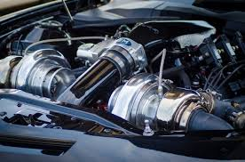
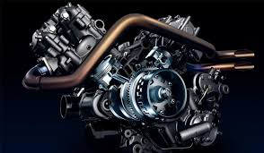

AUTOMOBILE ENGINEERING
Automobile Engineering or Automotive Engineering is a part of Mechanical Engineering. Through the application of automotive technology, the course offers specialisation in vehicle designing, repairing, testing and assembling. In this programme, one can also learn safety engineering, quality management and control, automotive analytics as well as assembling and installation of various automobiles. BE/B.Tech in Automobile Engineering is a 4-year programme.This programme also involves the study of courses related to aerospace and marine engineering. It enables the students to explore new areas, create new avenues in the fields of research and development of technologies in the field of automobile engineering. One can pursue M.Tech in Automobile Engineering after successful completion of BE/B.Tech.

ELIGIBILITY CRITERIA
UG: Candidates must have passed 10+2 with minimum qualifying marks in aggregate with Physics, Chemistry and Mathematics as core subjects. Besides national-level test like JEE, Independent entrance tests for Automobile Engineering are also held by various state, central, and private universities which mostly require 50% in qualifying exam as the prerequisite to appear for the test
PG: Candidates must hold a degree in Bachelor of Engineering/B.Tech in Mechanical Engineering/Automobile Engineering along with a good score in entrance tests held for PG programme held by the various state, central, and private universities or national-level test like GATE.
SCOPE OF AUTOMOBILE ENGINEERING
As Design Engineers, automobile engineers design the intricate details of the hydraulic, electrical, and mechanical systems inside a vehicle.
As Development Engineers, they are involved in the development, implementation, operation, maintenance, and control of all processes in the manufacture of vehicles.
As quality control executive, they work towards improving the efficiency of existing vehicles and developing new ones.
Along with this, graduates and postgraduates may fetch following jobs in the automobile industry:

Automobile Engineer
Material Processing Specialist
Safety Testing Specialist
Material Purchase Manager
Quality Control Executive
Research and Development Engineer
Automotive Design and Manufacturing CAD/CAM Technology in Automotive Engineering Engine Principles Engineering Analysis & Numerical Methods Fluid Mechanics and Machinery Fuel and Emission Control Systems Manufacturing Methods Modern Vehicle Technology Operations Research and Industrial Management Service and Management Vehicle body engineering and Aerodynamics Vehicle Performance and Testing Vehicle Technology and Dynamics